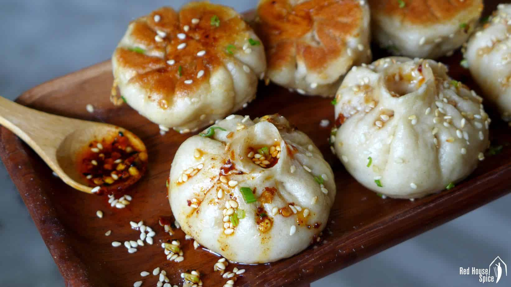

Top 3 Food in Shanghai
Xiaolongbao (Steamed Soup Dumplings)

Introduction
Xiaolongbao is Shanghai’s most famous dish—delicate steamed dumplings filled with pork (or crab) and a savory broth. They’re made by wrapping a thin dough skin around a mixture of minced pork, ginger, scallions, and a frozen broth cube (when steamed, the cube melts into a juicy soup inside the dumpling). The key to good xiaolongbao is the skin: thin enough to be translucent, but strong enough to hold the soup without breaking.In Shanghai, xiaolongbao is eaten with a small spoon: you bite a tiny hole in the skin, sip the hot soup first, then dip the dumpling in black vinegar with ginger slices (to cut through the richness). The most famous spot for xiaolongbao is “Din Tai Fung” (a Taiwanese chain with locations in Xintiandi), but local favorites like “Jia Jia Tang Bao” (near Yu Garden) serve more authentic, affordable versions.
Taste
Skin: Soft, thin, and slightly chewy—translucent enough to see the broth inside.
Filling: Tender minced pork with a hint of ginger and scallions—no gamey taste.
Soup: Rich, savory, and umami-packed—warm and comforting, especially on cool days.
Pairing: Serve with black vinegar and sliced ginger (balances the richness) and a side of mung bean soup (cools down the heat).
Price
Local Eateries (e.g., Jia Jia Tang Bao): 15–20 CNY/10 pieces (pork xiaolongbao); 30–40 CNY/10 pieces (crab xiaolongbao, seasonal).
Chain Restaurants (e.g., Din Tai Fung): 35–45 CNY/10 pieces (pork); 50–60 CNY/10 pieces (crab).
Street Stalls (near Yu Garden): 12–15 CNY/8 pieces (simpler version, great for a quick snack).
Shengjian Mantou (Pan-Fried Pork Buns)

Introduction
Shengjian Mantou is Shanghai’s beloved street food—golden, crispy-bottomed buns filled with savory pork and a hint of soup. Unlike xiaolongbao (which are steamed), shengjian mantou are first pan-fried to crisp the bottom, then steamed with a splash of water to cook the top and melt the broth inside. The result is a bun with three distinct textures: crispy on the bottom, soft on top, and juicy inside.The filling is similar to xiaolongbao—minced pork, ginger, scallions, and a touch of sugar (to balance the salt)—but shengjian mantou are larger and have a thicker dough. They’re usually sold in batches of four, served hot in a paper bag, and eaten by hand (be careful—they’re piping hot inside!). The best shengjian mantou in Shanghai are found at “Yang’s Fried Dumplings” (with locations across the city), where locals line up for their crispy, flavorful buns.
Taste
Bottom: Crunchy, golden, and slightly oily (in the best way)—the pan-frying adds a toasty flavor.
Top: Soft and fluffy, with a slight chewiness from the dough.
Filling: Tender pork with a savory-sweet taste; the broth is less abundant than xiaolongbao but still adds juiciness.
Price
Local Stalls (e.g., Yang’s Fried Dumplings): 10–12 CNY/4 pieces (pork shengjian mantou).
Breakfast Shops: 8–10 CNY/4 pieces (simpler version, smaller size).
Upscale Eateries: 18–25 CNY/4 pieces (with additions like shrimp or crab meat).
Shanghai-style Braised Pork Belly (Hong Shao Rou)

Introduction
Shanghai-style Braised Pork Belly—known locally as “Hong Shao Rou”—is a classic home-style dish that’s comfort food at its finest. It’s made by slow-braising chunks of pork belly (with skin on) in a sweet-savory sauce of soy sauce, rice wine, sugar, and star anise. The result is melt-in-your-mouth pork: the skin is tender, the fat is silky (not greasy), and the meat soaks up all the rich, caramelized sauce.In Shanghai, Hong Shao Rou is often served with steamed rice (to soak up the sauce) or as a filling in “mantou” (steamed buns). It’s a staple at family dinners and festivals, and every home cook has their own twist—some add dried shrimp for umami, others use dark soy sauce for a deeper color. The best versions are cooked low and slow, allowing the pork to absorb the sauce and become fork-tender.
Taste
Pork Skin: Tender and chewy, coated in a glossy sauce that’s sweet and savory.
Fat Layer: Silky and melt-in-your-mouth—braising breaks down the fat, so it doesn’t feel heavy.
Meat: Tender but not stringy, packed with the flavor of the braising sauce (soy sauce adds saltiness, sugar adds sweetness, star anise adds warmth).
Price
Home-Style Restaurants: 38–58 CNY/serving (generous portion, enough for 2–3 people).
Upscale Shanghai Restaurants: 68–98 CNY/serving (uses high-quality pork belly, often with additions like chestnuts or dried dates).
Street Food Stalls (as a bun filling): 6–8 CNY per braised pork bun.